Passionate about the natural environment, machine learning and remote sensing, my principal focus is on Deep Learning using Remote Sensing applied to Flood Mapping and Weather Forecasting and other environmental and societal challenges.
I am naturally curiouse about novel technologies, and proficient in multiple programming languages (e.g. Python, c#, javascript) and frameworks, such as fast.ai, PyTorch, and Google Earth Engine, as well as Docker, AWS and HPC for model training and deployment.
I am currently a Postdoctoral Research Associate at the Massachusetts Institute of Technology (MIT) in the Earth Intelligence Lab led by Prof. Sherrie Wang in Boston.
➞ My research
➞ My publications
As a passion project, I co-founded Early Coffee Games where I am the lead developer.
➞ My Game Dev Studio
Full CV
I am naturally curiouse about novel technologies, and proficient in multiple programming languages (e.g. Python, c#, javascript) and frameworks, such as fast.ai, PyTorch, and Google Earth Engine, as well as Docker, AWS and HPC for model training and deployment.
I am currently a Postdoctoral Research Associate at the Massachusetts Institute of Technology (MIT) in the Earth Intelligence Lab led by Prof. Sherrie Wang in Boston.
➞ My research
➞ My publications
As a passion project, I co-founded Early Coffee Games where I am the lead developer.
➞ My Game Dev Studio
Full CV
About Me
With a background in Environmental and Computational Engineering and Sciences, from the Swiss Federal Institute of Technology Lausanne, I had an education which allowed me to marry modeling with environmental problems and its applications.My PhD in theoretical ecology at the Laboratory of Ecohydrology led by Prof. A. Rinaldo, allowed me to get a deep understanding in mathematical modelling applied to process based models, all while furthering my knowledge in probabilities, statistics, and machine learning models.
Currently working in the Earth Intelligence Lab led by Prof. Sherrie Wang in Boston at the Massachusetts Institute of Technology (MIT), I am expanding my understanding of Deep Learning methods applied to challenging problems linked to the environment and its impact on society.
In my spare time, I co-founded the company Early Coffee Games with a good friend of mine. We have been active in the game development scene for about 10 years, and are currently developing our first commercial game, Hermit: an Underwater Tale. The game has received several grants for its development and promotion.
In my free time, I enjoy mountaineering, skiing (when I'm not living in the desert), road and mountain biking, board and video games, movies, music (especially music festivals, I used to organise one), and last but not least, cheese, coffee and beer.
Science
The common theme throughout my work has been mathematical modelling of environmental challenges, be it as it currently is weather forecasting, or previously flood mapping with deep learning, or process based models of population dynamics.
In both my current and past work, optimisation and inference have played a major role.
Presented here are chosen topics of my current and past work.
In both my current and past work, optimisation and inference have played a major role.
Presented here are chosen topics of my current and past work.
Current Work
My current work focuses on developing novel Deep Learning solutions to Remote Sensing applications in order to address environmental and societal challenges.My current focus is on hyper-local weather forecasting and downscaling.
Hyper-local weather forecasting and downscaling
Collaborators: Qidong YangDaniel Salles CivitareseJohannes JakubikEric SchmittAnirban ChandraJeremy VilaDetlef HohlChris HillCampbell WatsonSherrie Wang
This project aims at generating hyper-local weather forecasts, downscaling from global weather models to local scales and fixed and arbitrary locations.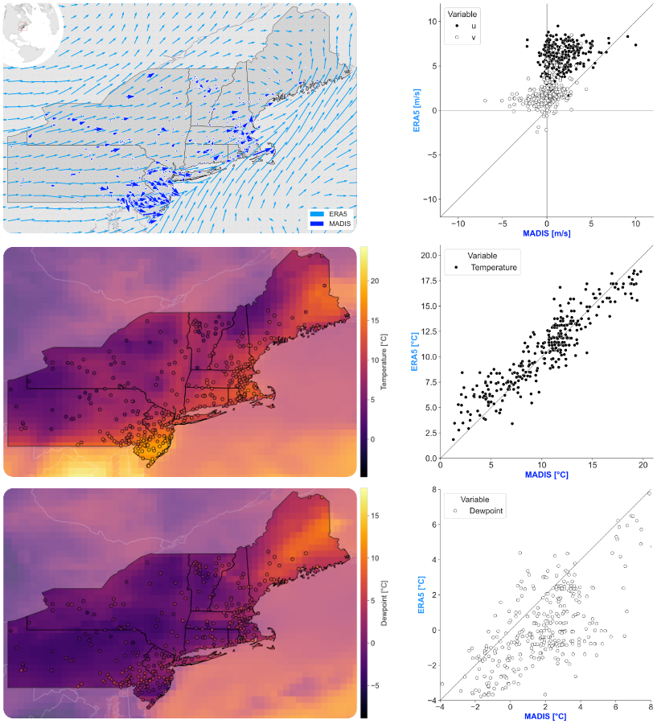Comparison of data collected by weather stations (MADIS) and linearly interpolated global reanalysis data (ERA5).Click to Read On
↓
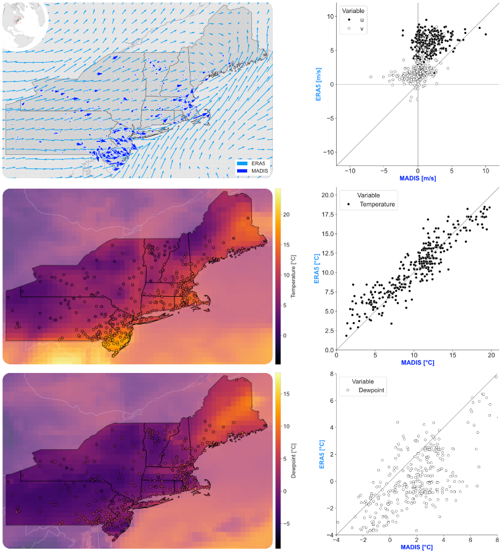
Comparison of data collected by weather stations (MADIS) and linearly interpolated global reanalysis data (ERA5).↓
While a lot of the recent machine learning methods have focused on reproducing global weather reanalysis and forecast models, a discrepensasy exists between the global models and local weather stations. This project aims at downscaling global weather models to local scales, and even arbitrary locations, by combining global reanalysis data with local weather station data.
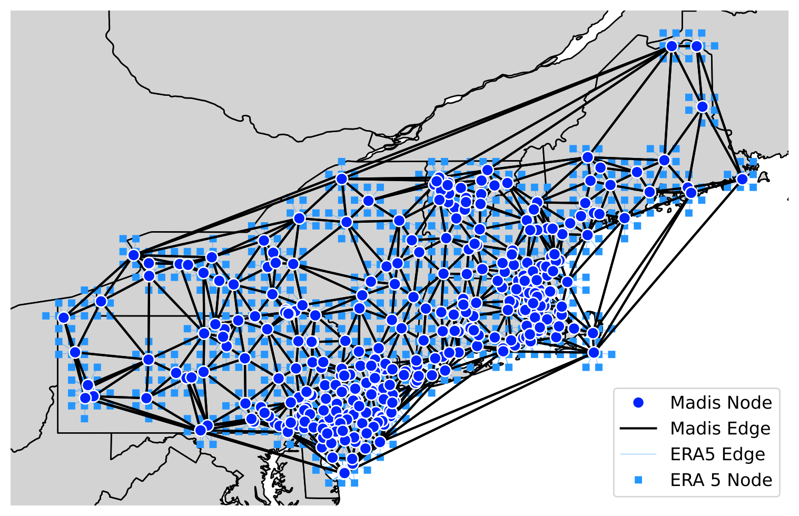Weather station and ERA5 graph for the US Northeast study region. MADIS stations are shown as dark blue circles; the black edges connect each weather station in a Delaunay Network. ERA5 nodes are shown as light blue squares, and each weather station is connected to its 8 nearest ERA5 neighbors.
To tackle this task, we first focus on forecasting the weather at fixed locations. We developed a series of deep learning models that take as input reanalysis data (ERA5/HRRR) and local weather station data (MADIS), and output a forecast for the next 24 hours at the location of the weather station.
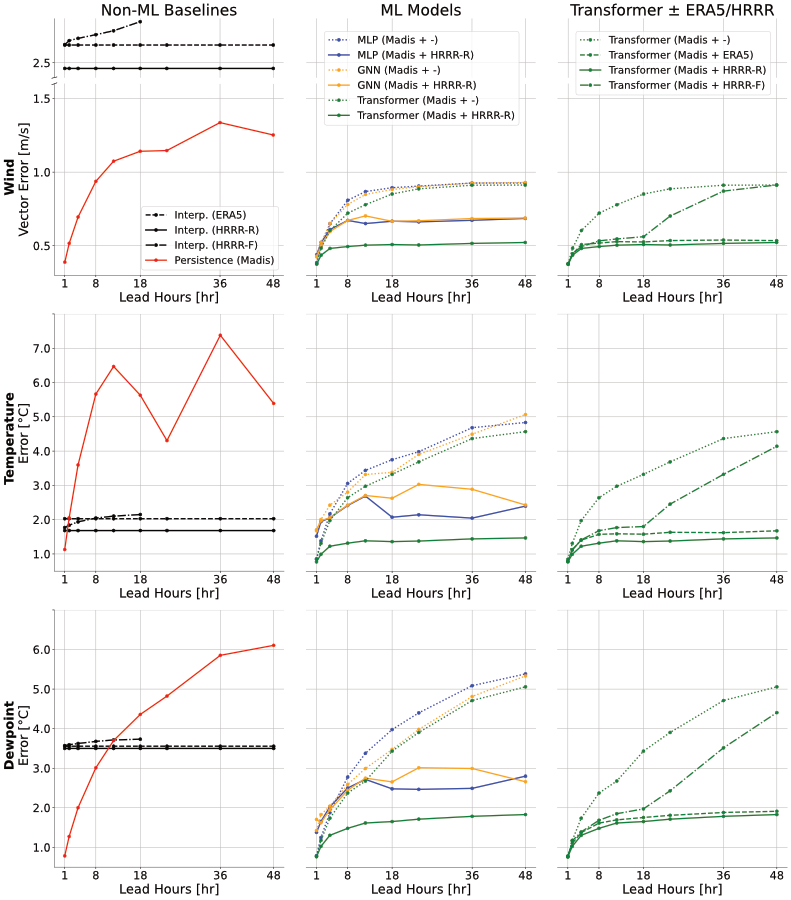Model forcast errors with respect to 10m wind, 2m temperature, and 2m dewpoint at various lead times.
The results show that the models are able to accurately forecast the weather at the location of the weather station.
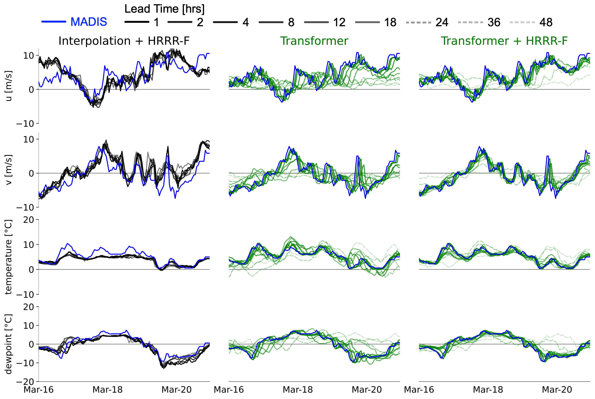Example time series illustrating the transformer model's integration of HRRR-F into its prediction.
Our current focus lies in extending the model to arbitrary locations, by integrating the global reanalysis data with local weather station data, as well as satellite imagery.Publications
[Preprint] Yang et al., 2024 - Local Off-Grid Weather Forecasting with Multi-Modal Earth Observation DataPresentations given on the subject
[Poster] WACV - GeoCV, March 2025 - Combining Satellite Images and Local Weather Station Data for Accurate Hyper-Local Weather at Arbitrary LocationsBackground image: Image of the GOES-19 geostationary weather satellite caputed on June. 4 2025, 15:20 EST. Fun fact: I wrote a Google Earth Engine Applet to visualise the latest GOES-19 image.
Past Work
Historical Mapping of Bangladesh Floods - MODIS / Sentinel-1 DL Fusion
Collaborators: Rohit MukherjeeMatthew PurriMitchell ThomasMax MauermanUpmanu LallArifuzzaman BhuyanA.K.M. Saiful IslamBeth Tellman
Economic impacts of floods push people into poverty and cause setbacks to development as government budgets are stretched and people without financial protection are forced to sell assets.Accurate return period estimates of flood events are paramount to develop robust insurance products.
We here apply a deep learning algorithm (combined Long-Short-Term-Memory (LSTM) and Convolutional Neural Network (CNNs)) approach.
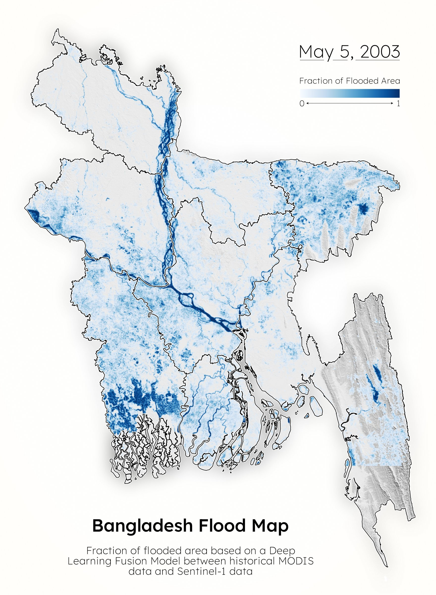Click to Read On
↓
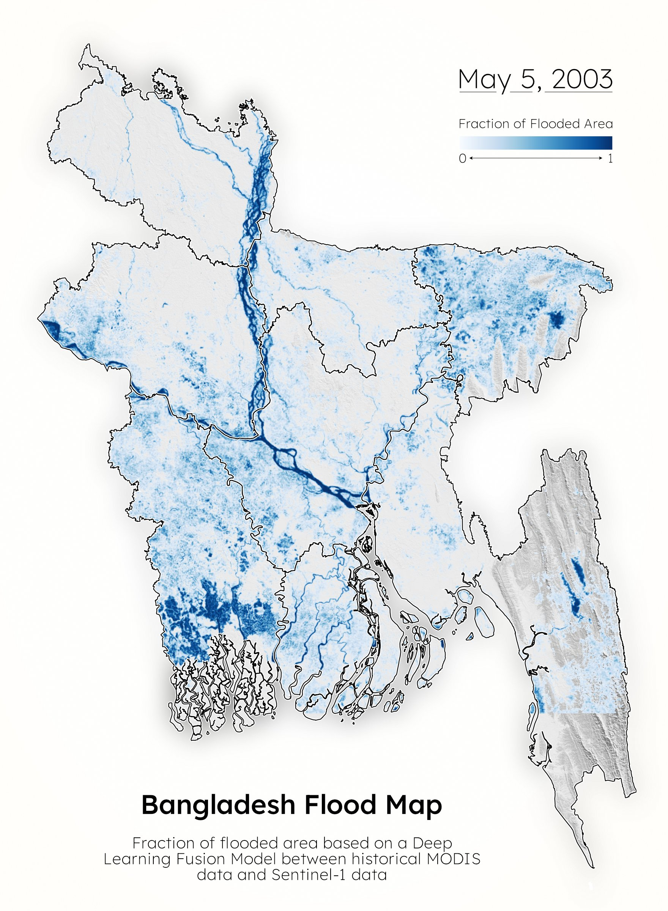
↓
By combining historical MODIS satellite images with modern Sentinel-1 images, we produce reliable return period estimates.
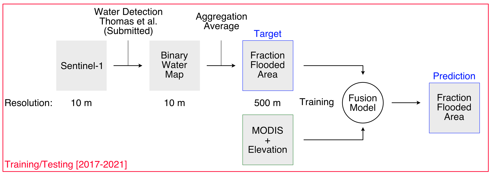Schematic representation of the proposed framework. Based on a Sentinel-1 derived flood map, aggregated at 500 meter resolution, we train a fusion model which infers the fraction of flooded area in each pixel based on MODIS features.
The proposed framework takes advantage of the ability of radar to "see" water even through clouds, one of the major challenges of flood mapping.
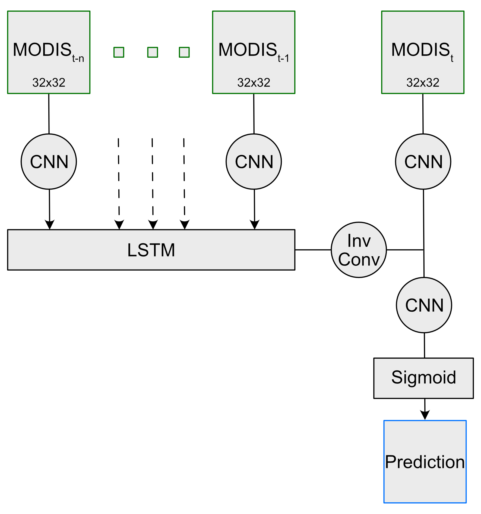Details of Fusion model consisting in a series of Convolutional Neural Networks (CNNs) applied to MODIS 8-days composite images, passed through a Long Short Term Memory (LSTM) network, and later merged with the MODIS image at time t, to finally go through a last CNN.
By crating a model able to fuse MODIS 8-days composite images with Sentinel-1 derived fraction of flooded area, we infer a 20 years long historical time series over Bangladesh based on the 20 years long MODIS time series.
The data to train, test and validate the model is comprised of every 32x32 500 meters resolution chip where MODIS 8days composite and Sentinel-1 fully overlap. Sentinel-1 is available since 2017.
The proposed model takes advantage of both the spatial and temporal information contained in MODIS images.
For each time step, the n previous time steps are considered to make a prediction on the fraction of flooded area, leveraging the temporal dynamics of floods.
Each image first goes through a Convolutional Neural Network (CNN), extracting the spatial information and compiling the multi bands information into a single value for each pixel.
This generates a series of values for each pixel, which is then passed through a Long Short Term Memory (LSTM) network designed to, through a series of gates, predict the probability of flood to be present.
Finally, the output of the LSTM is combined with the MODIS composite image at time t and passed through a final CNN, generating a prediction for the fraction of flooded area for each pixel in the image.
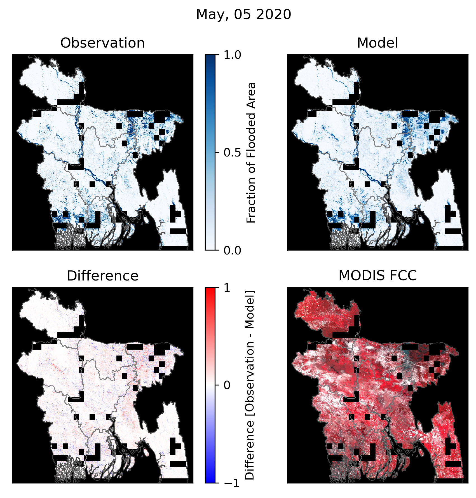Observed and Inferred fraction of flooded area, result of deep learning fusion between MODIS and derived Sentinel-1 data, along with error (difference) and MODIS False Color Composite (FCC), for a chosen date selected out of the testing Set (Mai. 5 2020).
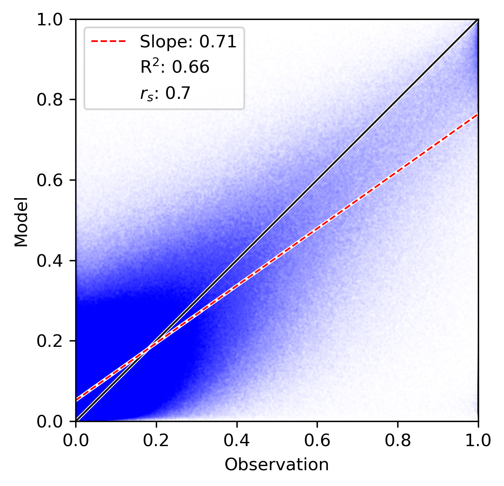Error distribution between the observation (Sentinel-1 algorithm) and Model for the full testing set.
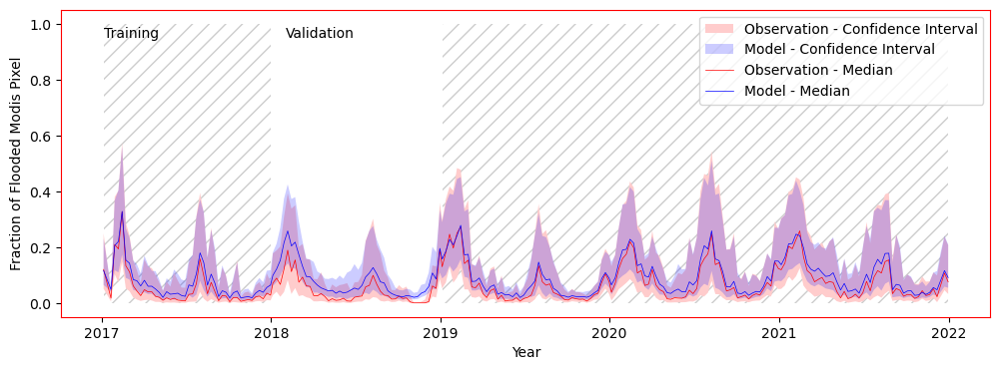Observed and Inferred time series of fraction of flooded area for all of Bangladesh for the training and testing set. This model is used for the historical time series inference (see below).
For the testing, a single year (2018) is completely removed from the dataset.
The result of the developed fusion model is shown here for a single day (Mai 5 2020) on all available chips for this day, and as a time series for all of Bangladesh for all dates where chips are present, as examples of inference on the testing dataset.
The var R2 of 0.66 shows a good agreement between the observed and modelled data.
The time series shows that the low water values during the dry season are well modeled, and the peaks during the monsoon and irrigation season correctly reproduced.
Infered historical time series of fraction of flooded area from 2001 to 2021, produced with the fusion algorithm and based on the historical MODIS data.
This result permits us to run inference on the historical data in order to produce an estimate for 2001-2020.
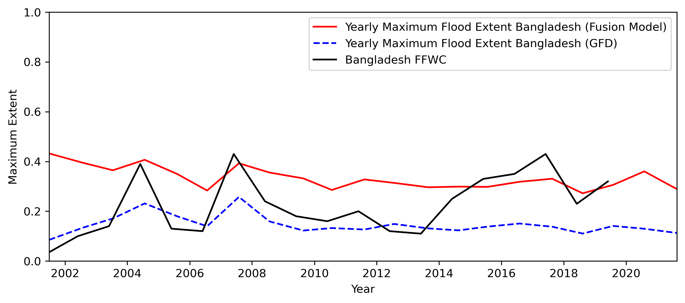Historical yearly maxima of fraction of flooded area inferred from the trained model and run on the historical MODIS dataset. Comparison with the Global Flood Database algorithm (GFD) and the Bangladesh Flood Forecasting and Warning Center (FFWC) generated maps.
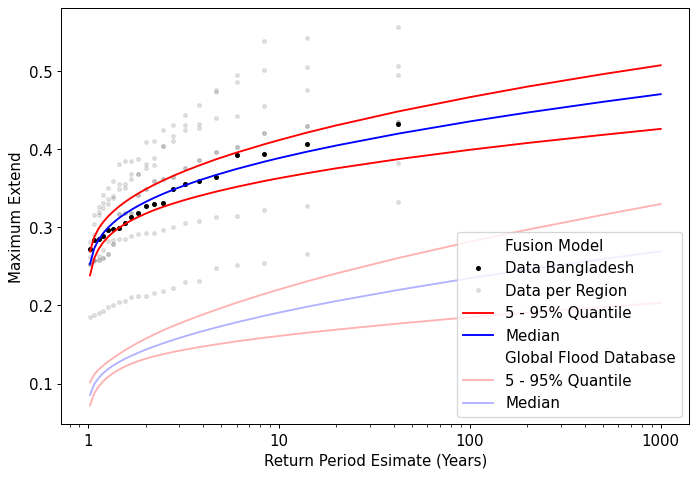Return period estimates based on the newly proposed MODIS Sentinel-1 fusion algorithm and on the GFD algorithm for the historical time series 2001-2021.
The yearly maximum of the inferred historical data is compared to another MODIS algorithm, the Global Flood Database algorithm (GFD) for the same area and period.
The developed methods shows similar trends with GFD, but a more realistic yearly maximum according to the time series analysis above.
This inferred data permits to construct more realistic return period estimates.
Publications
[CVPR EARTHVISION 2023] Giezendanner et al., 2023 - Inferring the past: a combined CNN-LSTM deep learning framework to fuse satellites for historical inundation mappingDownstream publications
[IGARSS 2023] Saunders et al., 2023 - A Comparison of Remote Sensing Approaches to Assess the Devastating May - June 2022 Flooding in Sylhet, Bangladesh[Preprint] Michler et al., 2024 - Impact Evaluations in Data Poor Settings: The Case of Stress-Tolerant Rice Varieties in Bangladesh
[Earth's Future] Saunders et al., 2025 - Sensitivity to Data Choice for Index-Based Flood Insurance
Presentations given on the subject
[Poster] Google Flood Forecasting Meets Machine Learning Workshop, Jan. 2024 - Inferring the past: a combined CNN-LSTM deep learning framework to fuse satellites for historical inundation mapping[Talk] International Geoscience and Remote Sensing Symposium (IGARRS), Jul. 2023 - Deep Learning Satellite Fusion Based Historical Inundation Estimates for Accurate Return Period Estimates in Bangladesh
[Poster] Google Flood Forecasting Meets Machine Learning Workshop, Jan. 2023 - Satellite Fusion Based Historical Inundation Estimates in Bangladesh
[Talk] American Geophysical Union (AGU), Dec. 2022 - Satellite Fusion Based Historical Inundation Estimates for Accurate Return Period Estimates in Bangladesh
[Talk] ESA Living Planet Symposium, Mai. 2022 - Creating historical time series of satellite observed inundation for risk transfer applications in Bangladesh
Background image: Sentinel-2 FCC over Sylhet, Bangladesh (May 2022)
Public vs Commercial Satellite data: creating a high resolution flood dataset to assess their advantages
Collaborators: Zhijie ZhangAlexander MelanconRohit MukherjeeIksha GurungMatthew PurriSarah LucaUpmanu LallKobus BarnardAndrew MolthanBeth Tellman
This project proposes to create a high-resolution dataset of flood events labelled on PlanetScope imagery. The main goal of the project is to understand if publicly available data can be as effective in detecting floods as commercial data.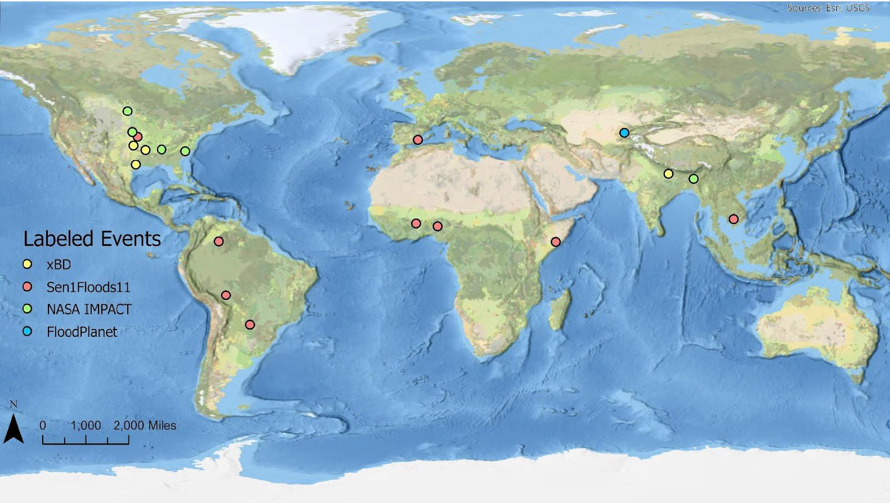Locations of the different labelled flood events, with their corresponding publicly available datasets. Figure credit: Zhijie ZhangClick to Read On
↓
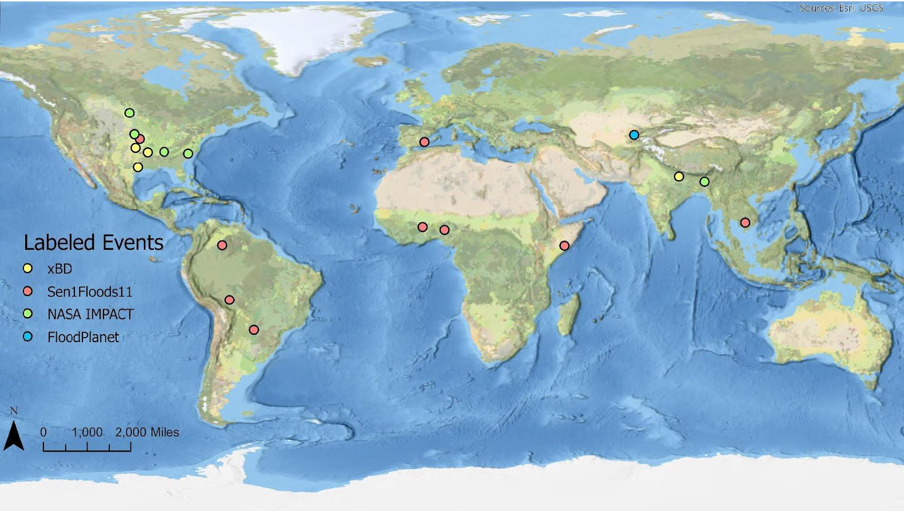
Locations of the different labelled flood events, with their corresponding publicly available datasets. Figure credit: Zhijie Zhang↓
One of the main outputs of this work is to publish a publicly available high resolution flood dataset. The selected flood events are based on existing flood event datasets (xBD, Sen1FLoods11, NASA IMPACT, FloodPlanet (in house)), in order to be able to compare with other lower resolution datasets, but also label a few new events.
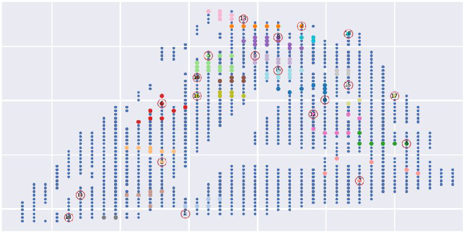Example of chip selection for a flood event: the blue dots represent where a full chip (with no missing data) is available, the colored chips then represent a first sampling meant accurately reproducing the distribution of the overall dataset, done via Latin Hypercube Sampling, the chips are then clustered based on spatial distribution via k-means (the different colors), and finally within these clusters, one chip is selected to be furthest apart from all other chips. A total of 15-20 chips per event are selected for the hand labelling process (depending on the quality of the chips).
 Example of two PlanetScope chips (False Color Composite (FCC)) and the hand labelled data. Figure credit: Zhijie Zhang
Example of two PlanetScope chips (False Color Composite (FCC)) and the hand labelled data. Figure credit: Zhijie ZhangIn the context of this work, I have mainly been involved in writing a pipeline to download and process PlanetScope scenes into chips, from which we sample a representative subset which is then labelled (c.f. figure above).
The events have been selected to coincide in time with available Harmonized Landsat Sentinel-2 (HLS) or Sentinel-1 data, such that deep learning models can be developed to compare the commercial vs public data source.
For each event, the selected chips have been hand labelled with three classes: no water, low confidence water, high confidence water (c.f. figure).
The data processing and labelling of all events has been completed, and we are currently working on releasing the dataset along with baseline model results (deep learning both on public and commercial data).
Publications
[Journal of Remote Sensing] Zhang, Giezendanner, Mukherjee et al., 2025 - Assessing Inundation Semantic Segmentation Models Trained on High- versus Low-Resolution Labels using FloodPlanet, a Manually Labeled Multi-Sourced High-Resolution Flood DatasetBackground image: Selection of chips of PlanetScope False Color Composite, overlaid with flood labels for a flood event in Bolivia on Feb. 15 2018.
Flood Mapping of Monsoon events over Pima County, Az, USA
It floods in the desert! The North American Monsoon brings intense storms and sometimes flash floods each summer. 2021 was the third wettest on record in Tucson (12.79 inches).Understanding where and when these floods happen can be challenging, and requires large scale monitoring.
Can satellite images provide insights into the flood extents and water pathways? Given the revisiting periods of satellites and large cloud cover during and around monsoon flood events, using these images can be challenging.
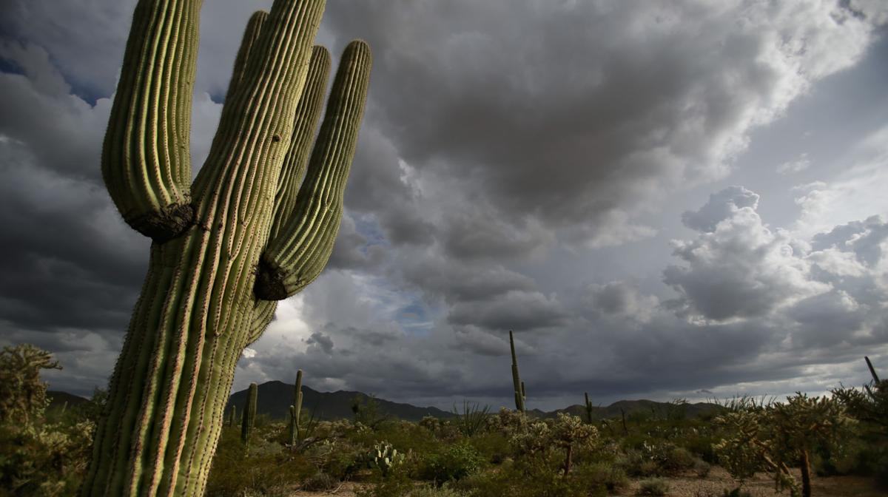Monsoon clouds gather over the cactus forest in the Saguaro National Park West, Wednesday, August 10, 2016. Kelly Presnell / Arizona Daily Star Click to Read On
↓
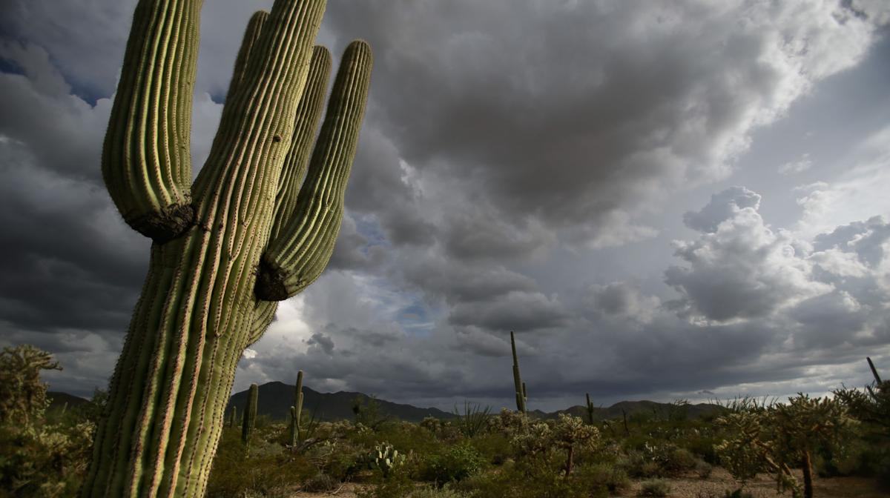
Monsoon clouds gather over the cactus forest in the Saguaro National Park West, Wednesday, August 10, 2016. Kelly Presnell / Arizona Daily Star ↓
This project is done in collaboration with the Pima County Government, where we are currently assessing the utility of satellite imagery to detect floods in the desert, in particular the advantage of high frequency PlanetScope commercial data.
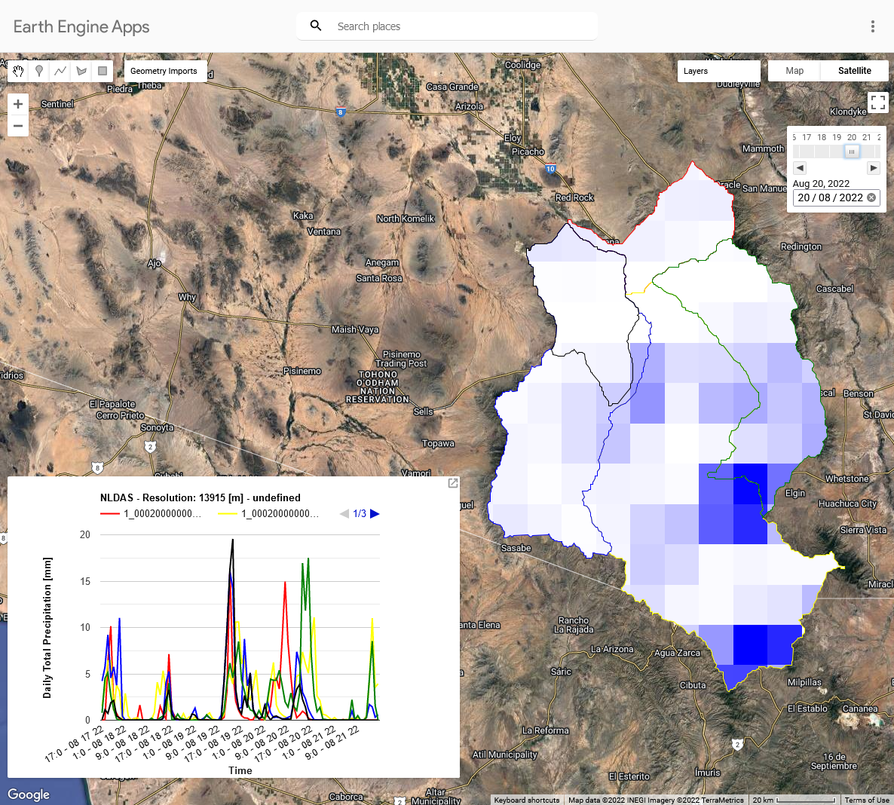Google Earth Engine applet developed to visualise the daily precipitation (based on the North American Land Data Assimilation System (NLDAS)) over the different watersheds.
Flash floods in the desert during the monsoon season recess rapidly, and capturing them with satellite images appears difficult.
PlanetScope images, with their near global and near daily images, provide an interesting product to detect the differences between consecutive images, as often only wet soil or sand remains as witness of the flood itself.
In this context, I have developed a Google Earth Engine Applet to visualize the daily precipitation over Pima county, in an effort to aid the selection of flood events to be modelled, and hint towards their location in space (c.f. figure).
Additionally, for another project, in collaboration with a PhD student, Alex Saunders, we developed a tool to map the available satellite images around a specific date. This is particularly useful here as it allows us to select flood events where satellite imagery has a potential (c.f. figure).
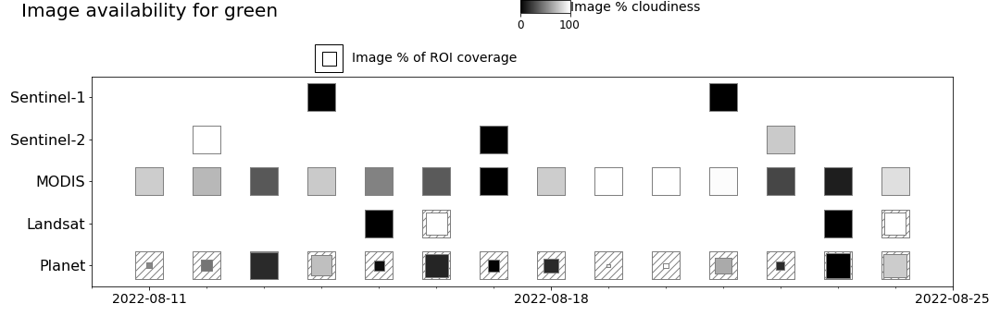Satellite image availability around a specified date for a given RoI, automatically retrieved. Built on Google Earth Engine and PlanetScope API in collaboration with Alex Saunders.
I have contributed to hand labeling flood events and developed machine learning algorithms to classify the wet sand we observed.
One of the promising methods we developed is based on selecting two consecutive PlanetScope images, one on the morning of the event, and one on the day after.
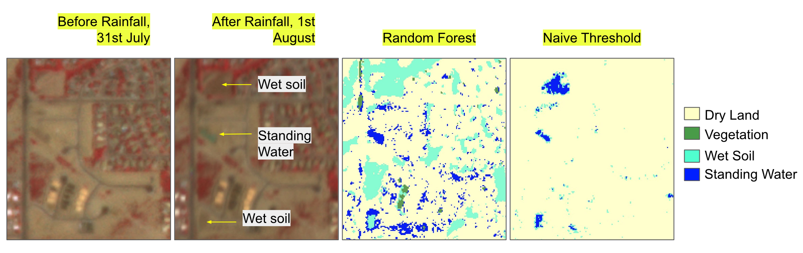FCC PlanetScope images before and after the event and initial results of the random forest algorithm along with naive NDWI thresholding. Figure Credit: Rohit Mukherjee
This permits to identify the changes in the landscape, and seems to be most promising with the algorithms we developed.
Presentations given on the subject
[Poster] American Geophysical Union (AGU) , Dec. 2022 - Flooding in the desert: Assessing the value of satellite observations of inundation from the North American Monsoon with the Pima County Regional Flood Control DistrictBackground image: PlanetScope multi-date NIR composite over West Tucson, Az, USA (July 31 and August 1st 2022)
Spatiotemporal dynamical modelling of ground beetle presence in mountains based on Earth Observation data
Collaborators: Damiano PasettoJavier Perez-SaezCristiana CerratoRamona ViterbiSilvia TerzagoElisa PalazziAndrea Rinaldo
Mountain areas represent a challenging environment to efficiently monitor species over extended periods of time in a large area.To make informed decisions, park managers in protected areas may require knowledge about the health, presence, and dynamics of species in these areas.
To accomplish this, they may need to gain further information beyond the sampled data, extrapolating the data beyond the observed and integrating population dynamics for near-term forecasting of species presence.
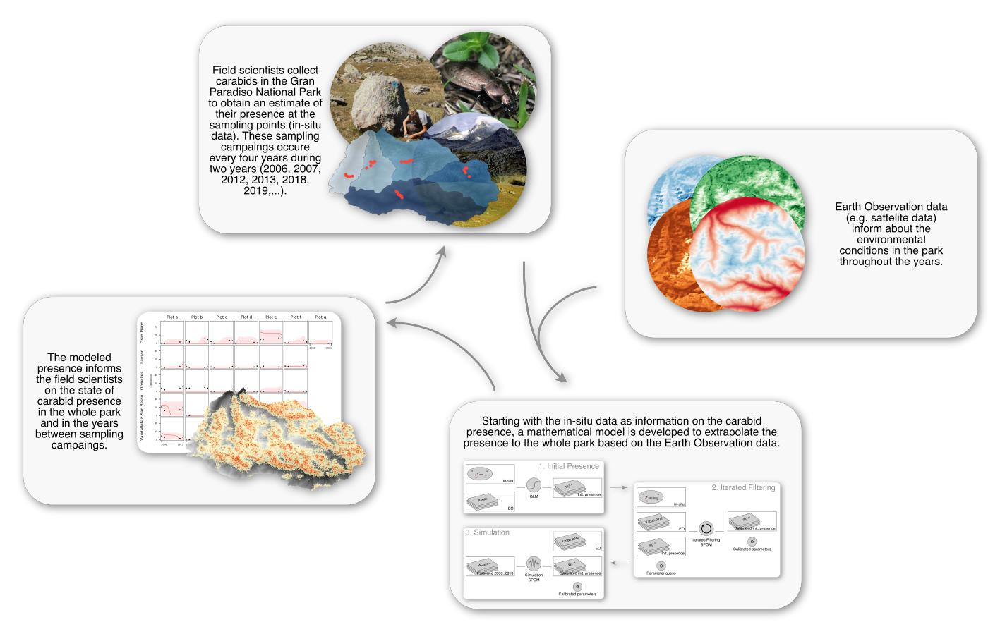Click to Read On
↓
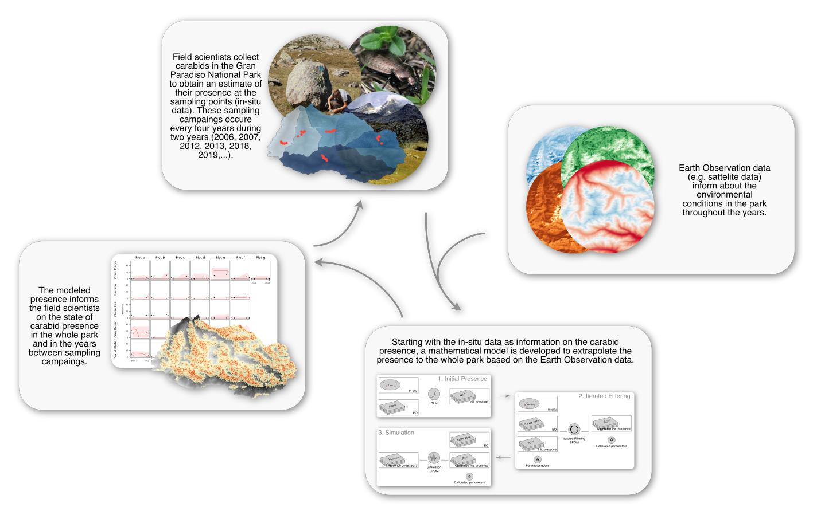
↓
In order to accurately model these species, it is of crucial importance to understand their drivers for presence and dynamics.
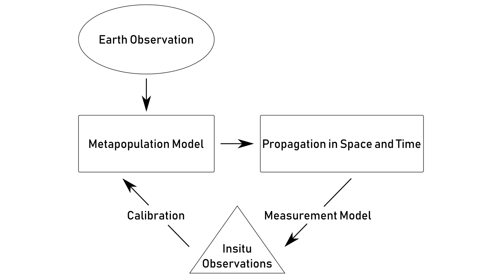Schematic representation of the proposed framework: develop an applied metapopulation framework to reproduce observed dynamics of mountain species in space and time driven by Earth Observation and calibrated on Insitu Observations.
The goal of this study is to develop an applied metapopulation framework to reproduce observed dynamics of mountain species in space and time, driven by Earth Observation and calibrated on Insitu Observations.
A metapopulation is commonly described as a population of populations of a single species , i.e. a population comprised of multiple subpopulations, called local populations inhabiting the same landscape, but in distinct geographical locations. The metapopulation concept is an abstraction of the concept of population, where an ensemble of interacting individuals is considered to a higher level, and where interacting subpopulations are considered.
The specific metapopulation model used here is called Spatially-Explicit Stochastic Patch Occupancy Model (SPOM).
Building on a grid with N cells, SPOM computes a possible distribution of occupied cells at every simulation time t by considering extinction and colonisation processes, whose rates depend on the species properties and on the landscape features. A binary state variable wi (t) is set to 1 when the cell i is occupied and 0 when empty (i = 1, ... , N).
Starting from a given initial distribution of occupied cells, at each time step, the model allows unoccupied cells to be colonised by surrounding occupied cells with a certain probablity.
Then, the cell becomes occupied at time t + ∆t depending on a random sample from a Bernoulli distribution. Similarly, species in occupied cells can go extinct with a certain probability. SPOM works as a Markov chain, where, for each cell, the probabilities of colonisation and extinction events are modelled depending on presence and conditions.
Static and dynamic Earth Observation data used in the study to characterise the niche of the species in each pixel.
In the context of this work, the colonisation and extinction probabilities are based on using Earth Observation data to characterise the niche of the species.
The factors are combined in a non-linear logistic function to best describe the niche.
The different EO factors are selected to best describe the environmental conditions relevant for the modeled species.
The developed framework proposes a three step algorithm:
1. Estimation of the initial presence of the species in the landscape through a Species Distribution Model (SDM);
2. Calibration of the partially observed markov process (POMP) through iterated filtering (IF);
3. Simulation of the species in the landscape with the calibrated model (inference).
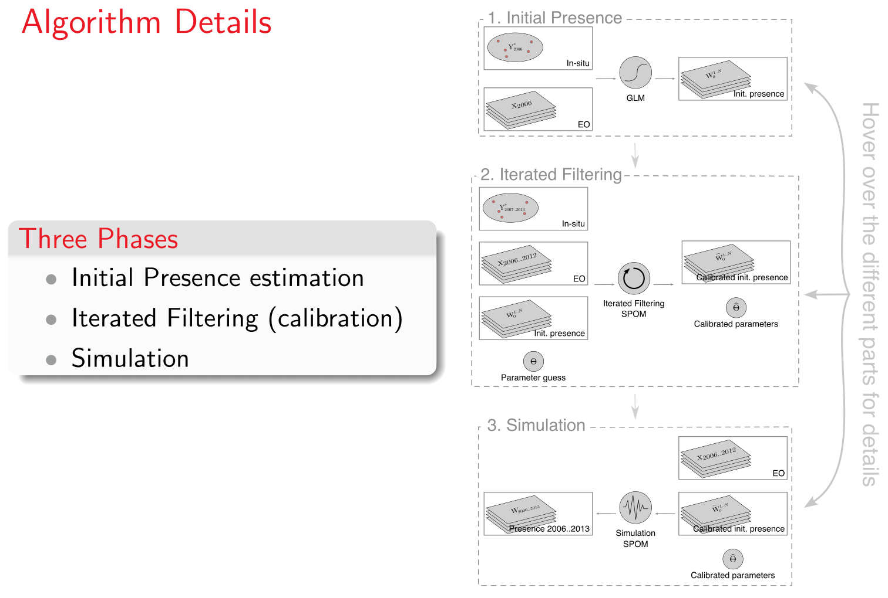
The iterated filtering algorithm allows data only partially observed in time to be accommodated by solely updating the calibration at time steps where the data is available.
This developed framework has been tested on two species of Carabids in the Gran Paradiso National Park (GPNP), where the presence has been modelled in space and time.
Average occupancy of Pterostichus flavofemoratus and Carabus depressus over the Gran Paradiso National Park for the years 2006 to 2013, result of the dynamical metapopulation model.
Given the process based nature of this model, the framework has the potential to propagate the presence of a species in space and time, and potentially inform on the effects of climate change.
Publications
[PNAS] Giezendanner et al., 2020 - Earth and field observations underpin metapopulation dynamics in complex landscapes: Near-term study on CarabidsPresentations given on the subject
[eLightning] American Geophysical Union (AGU) , Dec. 2021 - Earth and field observations underpin metapopulation dynamics in complex landscapes: near-term study on CarabidsBackground image: Modelling output of the presence of Carabus depressus for 2013 over the Gran Paradiso National Park.
Publications
Local Off-Grid Weather Forecasting with Multi-Modal Earth Observation Data
Yang Q., Giezendanner J., Civitarese D. S., Jakubik J., Schmitt E., Chandra A., Vila J., Hohl D., Hill C., Watson C., Wang S.
Journal of Advances in Modeling Earth Systems, 2025
Journal of Advances in Modeling Earth Systems, 2025
Observation-driven correction of numerical weather prediction for marine winds
Peduto, M., Yang Q., Giezendanner J., Devis Tuia, Wang S.
Preprint, 2025
Preprint, 2025
Impact evaluations in data-scarce environments: The case of stress-tolerant rice varieties in Bangladesh
Michler J. D., Al Rafi D. A., Giezendanner J., Josephson A., Pede V., Tellman B.
Journal of Development Economics, 2025
Journal of Development Economics, 2025
Assessing Inundation Semantic Segmentation Models Trained on High-versus Low-Resolution Labels using FloodPlanet, a Manually Labeled Multi-Sourced High-Resolution Flood Dataset
Zhang Z., Giezendanner J., Melancon A., Mukherjee R., Gurung I., Lall U., Barnard K., Molthan A., Tellman B.
Journal of Remote Sensing, 2025
Journal of Remote Sensing, 2025
Sensitivity to Data Choice for Index-Based Flood Insurance
Saunders A., Tellman B., Benami E., Anchukaitis K., Hossain S., Bennett A., Islam A.K.M. S., Giezendanner J.
Earth's Future, 2025
Earth's Future, 2025
Urban Flood Dataset: A globally sampled high resolution hand labeled dataset for training and validating flood extent
Mukherjee R., Friedrich H., Tellman B., Giezendanner J., Zhang Z., Islam A.
Submitted, n. d.
Submitted, n. d.
A globally sampled high-resolution hand-labeled validation dataset for evaluating surface water extent maps
Mukherjee R., Policelli F., Wang R., Tellman B., Sharma P., Zhang Z., Giezendanner J.
Earth System Science Data, 2024
Earth System Science Data, 2024
A Comparison of Remote Sensing Approaches to Assess the Devastating May - June 2022 Flooding in Sylhet, Bangladesh
Saunders A., Giezendanner J., Tellman B., Islam A., Bhuyan A., Islam A.K.M. S.
2023 IEEE International Geoscience and Remote Sensing Symposium (IGARSS), 2023
2023 IEEE International Geoscience and Remote Sensing Symposium (IGARSS), 2023
Inferring the past: a combined CNN-LSTM deep learning framework to fuse satellites for historical inundation mapping
Giezendanner J., Mukherjee R., Purri M., Thomas M., Mauerman M., Islam A.K.M. S., Tellman B.
Computer Vision and Pattern Recognition Conference (CVPR), EARTHVISION, 2023
Computer Vision and Pattern Recognition Conference (CVPR), EARTHVISION, 2023
A note on the role of seasonal expansions and contractions of the flowing fluvial network on metapopulation persistence
Giezendanner J., Benettin P., Durighetto N., Botter G., Rinaldo A.
Water Resources Research, 2021
Water Resources Research, 2021
Earth and field observations underpin metapopulation dynamics in complex landscapes: Near-term study on carabids
Giezendanner J., Pasetto D., Perez-Saez J., Cerrato C., Viterbi R., Terzago S., Palazzi E., Rinaldo A.
Proceedings of the National Academy of Sciences, 2020
Proceedings of the National Academy of Sciences, 2020
Beyond the patch: on landscape-explicit metapopulation dynamics
Giezendanner J.
PhD Thesis, 2020
PhD Thesis, 2020
On the probabilistic nature of the species-area relation
Zaoli S., Giometto A., Giezendanner J., Maritan A., Rinaldo A.
Journal of Theoretical Biology, 2019
Journal of Theoretical Biology, 2019
A minimalist model of extinction and range dynamics of virtual mountain species driven by warming temperatures
Giezendanner J., Bertuzzo E., Pasetto D., Guisan A., Rinaldo A.
PLoS One, 2019
PLoS One, 2019
Towards 3-D distributed odor source localization: an extended graph-based formation control algorithm for plume tracking
Soares J. M., Marjovi A., Giezendanner J., Kodiyan A., Aguiar A. P., Pascoal A. M., Martinoli A.
IEEE/RSJ International Conference on Intelligent Robots and Systems (IROS), 2016
IEEE/RSJ International Conference on Intelligent Robots and Systems (IROS), 2016
Automatic quality assessment of short and long-TE brain tumour MRSI data using novel Spectral Features
de Barros N. P., McKinley R., Giezendanner J., Knecht U., Wiest R., Slotboom J.
Proc. Intl. Soc. Mag. Reson. Med, 2016
Proc. Intl. Soc. Mag. Reson. Med, 2016
Rainfall Forecasting in Burkina Faso Using Bayesian-Wavelet Neural Networks
Giezendanner J.
Master Thesis, 2015
Master Thesis, 2015
Game Development

Hobby game developer since 2014, I turned semi-professional in 2020 by co-founding Early Coffee Games. We are currently developing Hermit: an Underwater Tale.
Backstory
Game development started for me as a silly distraction and creative outlet in 2014 when Tristan Thévenoz approached me. Tristan is a classically educated artist, proficient in multiple forms of expression and passionate about the creative process. His love of video games led him to dabble in pixel art in 2013, and he was then looking for somebody to work with, on the technical aspect. This is when he approached me, and we soon became friends and started working on one silly project after the other.In our early days, we had the chance to get approached by an artist called François Burland, who was interested in hiring us to create video games for his arts installation. Over the course of three years, under the umbrella of Sharped Stone Studios , we participated in two different arts installation, each time trying to incorporate the essence of the artists' vision we were working with:
- SuperNova (2017), set in Martigny, a small town in the middle of the Alps in Switzerland, the exhibition focused on cultural landmarks in and around Martigny, reinterpreted by various artists. We developed two games dedicated to the pizza places and roundabouts, both very abundant in Martigny.
- Atomic Bazar (2018 - 2019), set in Fribourg, this exhibition was set around François' vision of the cold war. We developed four games, meant to encapsulate his vision and art into games.
Early Coffee Games
Early Coffee Games is a game development company based in Switzerland we created in 2020 with Tristan. The company is our step into semi-professional game development.Since its creation, the company can note a couple of successes:
- In 2020 we received the ProHelvetia pre-production grant for our debut game
Hermit: an Underwater Tale (see below)
. This allowed us to hire Plume Oggier for creating the game's music, Gwen Buord to produce the game's sounds, as well as Jonathan Fellay for the narrative part of the adventure.

- In 2021 the museum Espace Jean-Tinguely Nicki de Saint Phalle contracted us to create a unique art piece complementing their exhibition. We created Chromatic Racing, an interactive piece, which invites the visitor to create a piece of art by playing the game. The piece is exposed form 2019 to 2024.
- In 2022 we were selected for the Swiss delegation to go to the Games Developers Conference (GDC) in San-Francisco, where we showed Hermit.
- In 2022 we received a follow-up ProHelvetia production grant for Hermit: an Underwater Tale.

Hermit: an Underwater Tale is currently the studio's main focus. The game is a fast paced action game with arcade elements. You play as a hermit crab who faces waves of creeps and dangerous sea creatures.
In order to protect yourself and defeat your enemies, you will use a wide variety of empty shells as weapons. Each shell comes with a specific set of moves and attacks and will eventually break after use.
Without any shell, the hermit is fully exposed and any damage he receives will be lethal. The game features a simple core mechanic paired with a high and ever increasing difficulty over multiple levels.
In order to beat the game, you will have to combine skill, real-time resources management, smart item purchases, upgrade strategies and serious stamina in order to survive.
Feel free to check it out and let us know what you think!
In order to protect yourself and defeat your enemies, you will use a wide variety of empty shells as weapons. Each shell comes with a specific set of moves and attacks and will eventually break after use.
Without any shell, the hermit is fully exposed and any damage he receives will be lethal. The game features a simple core mechanic paired with a high and ever increasing difficulty over multiple levels.
In order to beat the game, you will have to combine skill, real-time resources management, smart item purchases, upgrade strategies and serious stamina in order to survive.
Feel free to check it out and let us know what you think!
© 2022 Jonathan Giezendanner
Source code for this website avaialable under MIT Licence on Github
Source code for this website avaialable under MIT Licence on Github